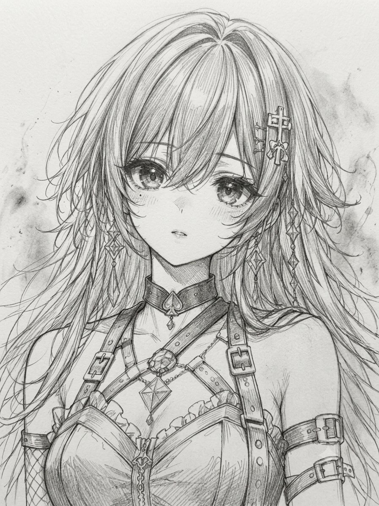
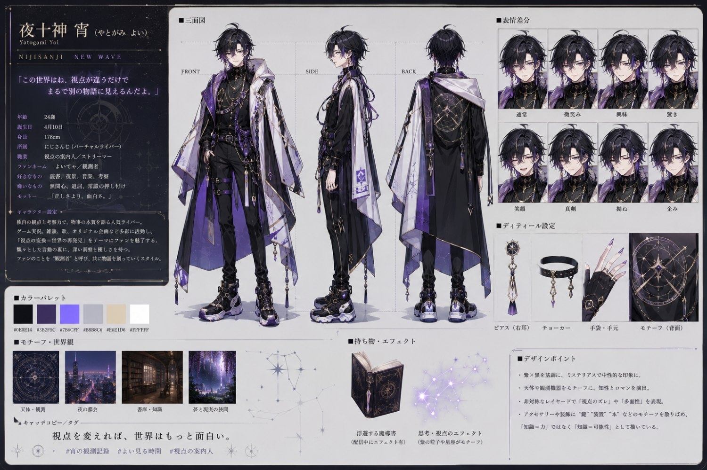
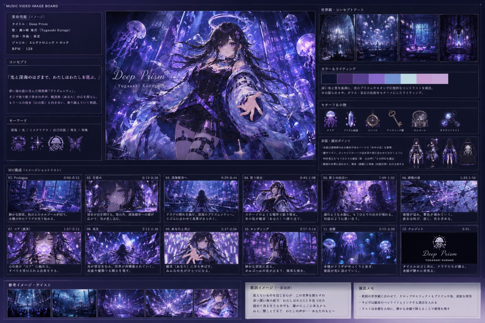
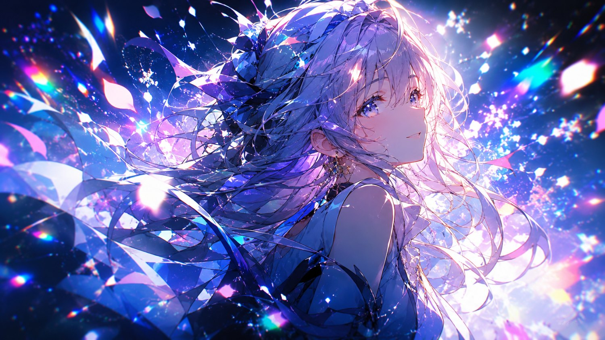

幽ヶ崎 海月 · DEEP PRISMAE LYRIC MV WORKSHOP
01
MATERIAL
GENESIS
企画設計と素材生成
AI素材でMVの世界観と方向性を決める。
GPTでキャラを、Sunoで楽曲を生成し、“言葉と画像”でコンセプトを語れる状態をつくる。
GPTでキャラを、Sunoで楽曲を生成し、“言葉と画像”でコンセプトを語れる状態をつくる。
GPT — ILLUST
SUNO — MUSIC
AFTER EFFECTS

1
01TODAY'S GOALS
今日のゴール
この回が終わると、MVの“方向性”を語れるようになる
- GPTでキャラクターイラストを生成する
- Sunoで歌詞付き楽曲を生成する
- 楽曲の感情曲線を読み取り、世界観を言語化する
- PureRefでリファレンスボードを構築する
- MVの方向性を“言葉と画像”で説明できるようになる

CHARACTER — ROUGH
幽ヶ崎 海月 / 鉛筆ラフ → AI素材化の起点
1
02THE PIPELINE
AI MV制作の全体像
7つの工程 — 本講座はこの流れを1本ずつ完成させていく
01
♪
楽曲生成
SUNO
02
✦
キャラ・背景
GPT
03
◴
世界観設計
COLOR · THEME
04
▣
Vコンテ制作
AE
05
⬚
パララックス
2.5D
06
❋
撮影効果
GLOW · SHAKE
07
▶
書き出し
EXPORT
本日は 01 – 03。素材と世界観という“すべての土台”をつくる。
1
03GENERATE THE SONG
Sunoで楽曲生成
曲が決まらなければ、映像も決まらない
- 歌詞付き楽曲を生成する
- 曲調と世界観の一致が最重要
- 歌詞の“感情の流れ”は後でVコンテに反映する
- A・B・サビの構造を意識して生成する
TitleDeep Prism
Genreエレクトロニック × ロック
Vocal幽ヶ崎 海月
BPM128
“Light, and the deep sea.”
光と深海のはざまで、わたしはわたしを選ぶ。
1
04GENERATE THE CHARACTER
GPTでキャラ生成
立ち絵・表情差分・背景 — そして“良いプロンプト”
A立ち絵
全身／バストアップ
B表情差分
喜・悲・強・無
C背景
抽象／街／ファンタジー
D一貫性
同一キャラを保つ指示
良いプロンプトの5条件
性格色調世界観カメラ距離ライティング

CHARACTER SHEET
三面図・表情差分・カラーパレットまで1枚に — 設定図の作例
1
05WORLDVIEW · 4 AXES
世界観を決める4軸
この4つが揃うと、MVの方向性が明確になる
1COLOR — 色調
深い紫と青を基調に、光のプリズムとネオン。水の揺らめき・宝石の反射。
2CHARACTER — キャラ性
ミステリアスで芯のある歌い手。観測者（あなた）に語りかける存在。
3EMOTION — 感情曲線
静かな語り → 上昇 → 解放。曲の起伏がそのまま映像の設計図になる。
4SYMBOL — モチーフ
クラゲ・プリズム結晶・オルゴール・鍵。世界観を象徴する小物。
1
06EMOTION CURVE
感情曲線の作り方
感情曲線は、Vコンテの“設計図”になる
A メロ
静か・語り
B メロ
上昇・期待
サビ
解放・広がり
間奏
余韻・転換
1
07REFERENCE BOARD · PUREREF
リファレンス構成
4分類で組み、世界観を“視覚的に説明できる状態”にする
1COLOR PALETTE — 色調
2MOTION STYLE — モーション
3TYPOGRAPHY — タイポ
4SPACE / LAYOUT — 空間

IMAGE BOARD — DEEP PRISM
楽曲情報・コンセプト・配色・モチーフ・ショットリストを1枚に集約
1
08READING THE REFERENCE
リファレンスの読み解き方
良いリファレンスは“理由”を説明できる
01
なぜ、この色が合うのか
深海の沈黙と、プリズムの光。色は感情の温度を決める。
02
なぜ、この構図が心地よいのか
視線の流れと余白。気持ちよさには必ず理由がある。
03
なぜ、この動きが曲に合うのか
BPMと感情曲線への一致。動きは音の翻訳である。
理由の言語化こそ、プロのワークフロー。
1
09FIND THE BPM
SunoのBPMを調べる
次回の作業前に、必ずBPMを確認しておく
1曲情報を見る
Sunoの曲ページにBPMが表示される場合がある。まずはここを確認。
2AEで波形を読む
オーディオをキーフレームに変換 → 波形の拍間隔を目視で測る。
3解析ツール
BPM Analyzer / Soundiiz などの無料ツールで自動解析する方法も有効。
数えた値は 必ずメモ — SESSION 02 の音同期がここから始まる。
1
10WORKSHOP · 20 MIN
ワーク：リファレンス構築
20分で“方向性を1行で”まとめる
GPTでキャラを1枚生成する
Sunoで楽曲を1つ生成する
PureRefで4分類ボードを作る
世界観の方向性を1行でまとめる
“State it in one line.”
夜のネオン × 切ない恋 × 疾走感のあるサビ
— たった1行で世界観が伝われば、設計は成功している。

11HOMEWORK → NEXT
宿題
PureRefボード PNG
MVコンセプトシート PDF
GPT生成キャラ 1〜3枚
Suno楽曲 1曲 ＋ BPMをメモ
NEXT — SESSION 02 BPM解析とタイミング設計（音同期）